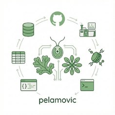
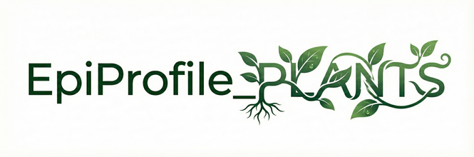

PhD Researcher · FPI Fellow
University of Oviedo · Dept. of Organisms and Systems Biology
Thesis on histone PTMs in Arabidopsis thaliana: EpiProfile_PLANTS, rosette ontogeny and PRIDE reanalyses.

Pelayo González de Lena Bioinformatician · Plant EpigenomicsUniversity of Oviedo · Dept. of Organisms and Systems Biology
Thesis on histone PTMs in Arabidopsis thaliana: EpiProfile_PLANTS, rosette ontogeny and PRIDE reanalyses.
CNIO · Centro Nacional de Investigaciones Oncológicas, Madrid
NGS transcriptomics and lncRNA pipelines for cancer genomics.
IAAP · University of Oviedo · Oviedo City Council · FORMACAL · ARTEAULA
Linux, Python and R/Bioconductor for omics, from setup to real projects.
GeoAI · ICM Lugo · Regional public health (FSP)
Geospatial AI, research and public-health settings.
University of Oviedo · FPI PRE2019-091395 · defence expected autumn 2026
Carlos III Health Institute
Autonomous University of Madrid
University of Oviedo · Cell and Molecular Biology

MATLAB suite extending EpiProfile 2.0 to plant histone proteomics, with curated peptide catalogs for three plant and algal species, a Snakemake + Docker workflow and an interactive dashboard.
Snakemake + Docker pipeline for Oxford Nanopore direct RNA-seq: basecalling, isoform analysis, m6A detection and differential expression, applied to Arabidopsis.
Histone PTMs across four stages of rosette development, QC-first.
Reanalyses of public proteomics datasets under one processing contract.
RNA-seq, differential expression and multi-omics approaches to oncology research at CNIO.
Multi-modal biomedical imaging platform: retinal imaging, histopathology, radiology and spatial transcriptomics.
Book chapter · Plant Transcriptomics and Epitranscriptomics (Springer)
Journal article · Clinical Epigenetics
Shell, WSL2 and reproducible environments for daily research work.
From tidyverse basics to RNA-seq analysis and publication-ready figures.
Core patterns and realistic omics examples, taught at IAAP among others.
Tutorials and workflows for research automation with AI agents.
Open-source tools, pipelines, courses and project code, loaded live from the GitHub API.
Loading repositories…
Football is my reset button. Striker for San Claudio (Liga Asterov): 20 goals in 21 matches, 9th top scorer of the First Division. Copa Asterov 2026 with Laviana CF: 2 goals in 4 matches.
Based at the Department of Organisms and Systems Biology, University of Oviedo. Open to discussions around plant chromatin, cancer bioinformatics, histone PTM proteomics, and reproducible workflows.